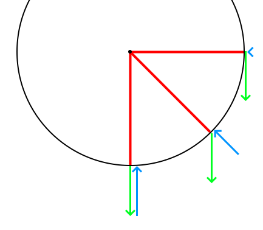
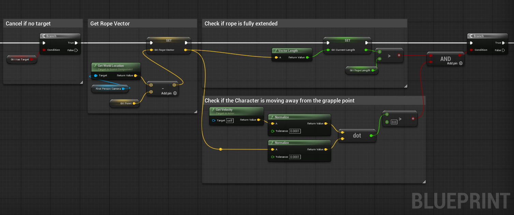

Grappling Hook
Unreal Engine Tutorial
In a previous tutorial I talked about how to make a physics based grappling hook in Unity. This tutorial is a more in-depth look at how to do the same thing in Unreal Engine, with some more experiments and some comments on what parts were the same or different.

Introduction
There are two ways grappling hooks (or webs) typically work in games: 1) by pulling the player directly to the target, or 2) by swinging a falling player around the grappled point in a pendulum motion.
In this tutorial we will make the pendulum version of a grappling hook, so that players can swing around obstacles, and in the future I will add extra systems for retracting or accelerating.
Theory
Physics
Lets go over the physics of a grappling hook.
The main component of a grappling hook is the pendulum motion. A real pendulum has very simple forces acting on it: Gravity pulling it down, and the rope pulling it towards the pivot point.
The reason the pendulum swings back and forth is because the rope applies its force based on the position and velocity of the object. When the object first starts falling the rope applies a small force towards the middle while gravity accelerates it downwards. When the object is near the bottom the rope applies a medium force up, countering gravity but not effecting its sideways momentum. When the object has gone past the center it has a lot of velocity away from the pivot, so the rope pulls it up and back to the middle with a lot of force, causing it to curve upwards and towards the middle. Finally, when the object is mostly going up the rope doesn't apply much force to it, letting gravity decelerate it until it stops and the cycle starts again.
This means what we need to simulate from the rope is a force towards the pivot based on how much the object is moving away from it. The final implementation is quite simple, but this result came from testing a lot of different options and and fixing many different problems.
Maths
Saying that the force is based on the velocity is well and good, but how exactly do we turn that idea into the directions and values that we use to move the player? There are many different formulas used to calculate different parts of pendulum motion, but I want my system to be robust to things like collisions, strange gameplay forces or even changing gravity, so I don't want to use the ones that assume any part of the setup (like where gravity is coming from) or that calculate a position instead of the forces or velocity (as this would lead to clipping into objects).
The truly realistic way to calculate the forces is to determine how much the rope is being stretched at each point in time, and apply a spring force to 'restore' it. The main difficulty of this approach is stopping the player from bouncing and oscillating like they're on an elastic band - which can be made worse because of the large discrete steps of a physics engine.
Implementation
Attaching the Hook
Before we can calculate and apply forces to the player, we need a way for them to choose a point and attach the grappling hook to it.
First set up an InputAction for the button used to grapple:
- Create an input action and name it something descriptive like 'Grapple'.
- Find and open the Input Mapping Context object (e.g. IMC_Default in the first person project).
- Add the new input action to the mapping list, and add a control mapping for the button you want to trigger it.
- In the main EventGraph for your character, create an Enhanced Action Event for the new IA you just made - this will let you trigger code when you press the grapple button.
Like most games we're going to get the grappling point based on where the player is aiming, and fail to grapple if there is nothing near enough. Just like in Unity we can draw a line from the camera and save the first point we hit as our target, which in Unreal Engine is called a Line Trace. This function only takes the start and end points of a line, and doesn't have options to take a direction and max distance directly like in Unity, so we'll have to use those values to calculate an end point instead. Here we run into another noticeable difference to Unity: the default unit is cm instead of meters, so my go-to big value of 100 doesn't even reach the ground from the camera!
Get a grapple point when pressing the grapple button:
- Create a Line Trace node coming from the 'Triggered' pin of the new Action Event.
- Get the world location of the camera, and connect it to the 'Start' pin.
- Get the forwards vector of the camera (Camera -> Get World Rotation -> Get Forward Vector), and multiply it by the maximum grappling distance. Remember the units are in cm so the value should be really big!
- Add the new value to the camera location, and connect the result to the 'End' pin of the Line Trace node.
- The object types pin needs an array of types the line trace is allowed to collide with - I used 'WorldDynamic', 'WorldStatic' and 'PhysicsBody' to include basically every object.
- Set a boolean (e.g. 'Has Target') to the return value of the Line Trace, then create a branch with the return value as its condition.
- From the 'True' line of the branch, break the 'Out Hit' pin and use the 'Location' pin to save the grappling hook point in a variable (e.g. 'Grapple Point').
- Save the 'Distance' value from the same hit result to a different variable (e.g. 'Rope Length'), so we know how long the rope is meant to be.
- Optional: To make sure it's working, draw a debug sphere at the location after setting it - if you can't see it you might have missed a step.
Forces
Now that we've attached the hook, we need to actually apply the forces to the player. Before we do that we need change some of the settings on the player character to let it use more realistic physics.
Changes:
- Turn on 'Simulate Physics' in the 'Physics' section of the Character Blueprint settings.
- Change 'Braking Deceleration Falling' to 0 in the 'Character Movement: Jumping/Falling' section.
Now the broad strokes of the grappling hook system:
- When the Input Action is 'triggered' (not shown in the), find a grapple point.
- Do nothing if no target was found.
- Optional: Pre-calculate the vector between the rope and the player.
- Check if the player is past the maximum length of the rope and moving away from the pivot. If either are false, cancel adding forces.
- Calculate and apply the tension force.
Most of these steps are simple, but using dot products to check if the player is moving towards or away is a little tricky if you've never used them before.
The dot product function is a simple but very useful maths function. For this situation we need to give the function normalized vectors (aka 'directions') - because when we do that the result is a number between 1 and -1 representing how similar the two directions are, with 1 being the same, -1 being opposites and 0 meaning they are at right angles.
This is how we check if the velocity is towards or away from the grapple point - by checking if the result of the dot product is greater than 0 or not.
Tension force
Now we just need to calculate the actual force the rope applies on the player. This is done by figuring out how much the rope has been extended past its maximum length, and applying that value with no changes as a force towards the grapple point!
Steps:
- Calculate how much further the player is from the maximum length of the rope.
- Apply a force towards the pivot point equal to that value (normalize the rope vector, negate it then multiply it by the extra rope length).
- Done!
This gives a smooth and robust swing with a lot less effort than my unity version.
Grappling Hook Finished!
Old Solution
In Unity the simple tension approach is a lot less intuitive, partly because the force units are different from the distance/velocity units - and this is why I came up with an implementation that used the players velocity to calculate the force to apply. This version works well, but is more complicated and has a small but noticeable problem - that the current solution was meant to be a band-aid solution for!
Velocity method:
- Determine how much of the velocity is parallel to rope using dot product.
- Multiply the magnitude of the original velocity by the result to get how much force we need to apply.
- Multiply the rope direction (the normalized rope vector) by the force value, then negate it so the force is towards the pivot instead of away, and apply the result to the player.
Unfortunately this approach causes what I call 'gravity leak': While the player is hanging from something they slowly start drifting downwards. This happens because of the order of different parts of the physics calculations. First the code we wrote calculates the perfect tension forces to apply to the player. Then the physics engine applies gravity to the player, increasing their velocity by a tiny amount. Finally the physics engine moves the player using their velocity.
This means that the player always has one frame of gravity more velocity than they should, and slowly drifts towards the ground.
We could fix this by accounting for the gravity leak, but the maths is more complicated than you would expect, and the 'leak' can be caused by other things like collisions that it wouldn't accoount for. Instead I thought I should add a small force based on how much the player has drifted downwards. After I implemented this force I got curious and wondered what would happen if that was the only force applied to the player... and to my embarrassment I found that it worked exactly the same as the other system but without all the subtle problems. This is now the tension force described above.